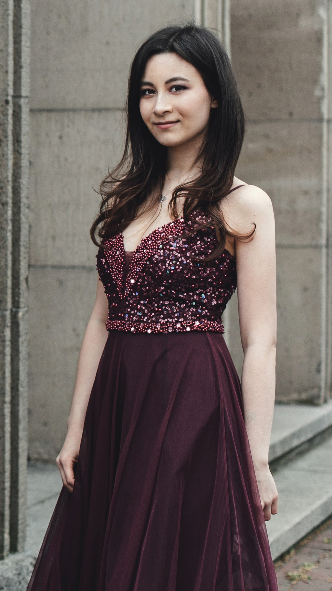
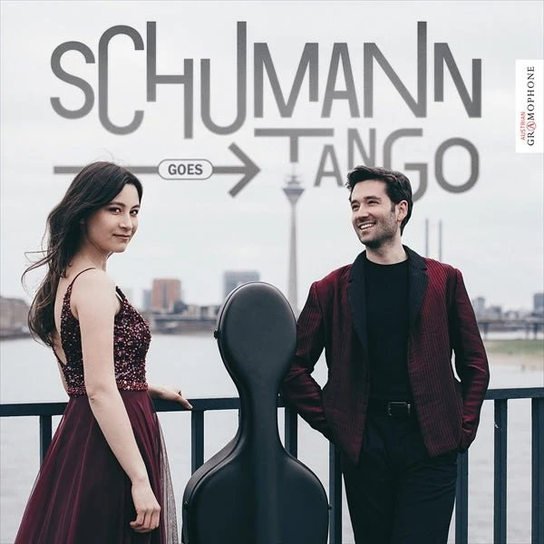

デュッセルドルフ在住 · ピアニスト
Alica Koyama Mueller
欧州の正統派ピアノ教育と日本の音楽文化を繋ぐ、バイリンガルの演奏家。
プロフィール
デュッセルドルフ在住のピアニスト。4歳よりピアノを始め、14歳でロベルト・シューマン音楽大学の早期入学プログラムに選ばれる。
2010年よりケルン音楽大学（HfMT Köln）にてアンドレアス・フロリッヒ教授に師事。学士・修士課程をともに最高評価で修了し、2025年3月、演奏家最高位の資格であるコンツェルトエグザメンを最高評価で取得。
在学中はパヴェル・ギリロフ教授（ヴィルヘルム・ケンプ・アカデミー）、アンリ・シーグフリードソン教授、ジャック・ルヴィエ教授ほか、各国の著名教授によるマスタークラスで研鑽を積む。
ドイツ・オランダ・スペイン・キプロス・アイルランド・イタリア各地の音楽祭および演奏会に出演。ケルン・フィルハーモニー、エッセン・フィルハーモニー（ピアノ・フェスティバル・ルール）などの著名会場でも演奏している。
日本語・ドイツ語の完全バイリンガル。ピアノデュオ「Bae & Koyama-Mueller」（ソヨン・ベーとの共演）としても活動中。

経歴
学歴
オーケストラ共演
奨学金・助成
音楽活動・メディア
受賞歴
ディスコグラフィ

ありさミュラー（ピアノ）· Roger Morelló Ros（チェロ）
シューマンのロマン性とアルゼンチン・タンゴの情熱が融合した意欲的なデビューアルバム。デュッセルドルフを拠点に活動する2人が生み出す独自の音楽世界。
購入する →レッスン・マスタークラス
ケルン音楽大学アンドレアス・フロリッヒ教授クラスで培った欧州正統派の指導を、日本語で直接お届けします。コンクール準備から留学相談まで幅広く対応。
音楽教育機関・音楽祭・コンクール主催者の方へ。演奏とマスタークラスを組み合わせた招聘プログラムについてご相談ください。
お問い合わせ
コンサート招聘・レッスン・取材・その他のご連絡は、こちらのフォームよりお送りください。
Instagramはこちら